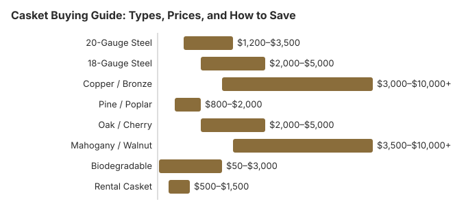

Casket Buying Guide: Types, Prices, and How to Save
A casket is often the single most expensive item in a funeral arrangement, yet most families have little experience buying one. The emotional weight of the moment, combined with limited time and high-pressure sales environments, can lead to overspending. This guide is here to help. We walk you through every type of casket, explain realistic price ranges, and share practical ways to save hundreds or even thousands of dollars -- all while honoring your loved one with the dignity they deserve.
Casket Price Overview
According to the National Funeral Directors Association and consumer surveys, the average casket purchased through a funeral home costs approximately $2,500 in 2026. However, this number can be misleading because casket prices span an enormous range. Families on a tight budget can find simple, dignified caskets for $800 or less, while those seeking premium materials and craftsmanship may spend $10,000 or more. The key is understanding what drives these price differences so you can make an informed choice.
It is worth knowing that the casket typically represents 10 to 20 percent of total funeral costs. While it feels like a deeply personal decision -- and it is -- it is also a product, and comparison shopping is both sensible and respectful.
Casket Types and Materials
Caskets come in a variety of materials, each with its own characteristics, appearance, and price range. Understanding the differences can help you choose one that fits both your budget and your wishes.
Metal Caskets
Metal caskets are the most commonly sold in the United States. They come in several grades:
- 20-gauge steel ($1,200 – $3,500): The most popular choice. Thinner and lighter than 18-gauge, but still durable and attractive. Available in a wide range of colors and finishes.
- 18-gauge steel ($2,000 – $5,000): Thicker and heavier, often marketed as a premium option. The practical difference between 18- and 20-gauge is minimal for most families.
- Stainless steel ($2,500 – $7,000): Rust-resistant and durable, with a polished appearance. Often positioned as a mid-to-high-end option.
- Copper and bronze ($3,000 – $10,000+): The most expensive metal options, valued for their beauty and longevity. These are among the highest-priced caskets available.
Wood Caskets
Wood caskets offer natural warmth and beauty. They are popular for both traditional burials and green burials.
- Pine and poplar ($800 – $2,000): Softwoods that are affordable, lightweight, and can be finished beautifully. An excellent value for families who want real wood without a premium price.
- Oak ($2,000 – $4,000): A classic hardwood choice with visible grain and a sturdy, traditional appearance.
- Cherry ($2,500 – $5,000): Rich in color and highly regarded for its elegant finish. A popular mid-to-high-range wood choice.
- Mahogany and walnut ($3,500 – $10,000+): Premium hardwoods that represent the top of the wood casket market. Beautiful, but the price difference is largely aesthetic.
Biodegradable and Green Caskets
For families choosing a natural or green burial, biodegradable caskets are designed to return to the earth:
- Wicker and bamboo ($800 – $3,000): Handwoven from sustainable materials, these caskets are lightweight, distinctive, and eco-friendly.
- Cardboard and fiberboard ($50 – $500): The most affordable option. While basic, some families personalize these with paint, fabric, or photographs for a meaningful touch.
- Unfinished pine ($500 – $1,500): A simple wooden casket without chemical finishes or metal hardware, suitable for green burial grounds.
Rental Caskets
If your family wants a viewing or funeral service before cremation, renting a casket is a smart alternative to purchasing one. Rental caskets are attractive, high-quality units with a removable interior liner. After the service, the body is transferred to a simple cremation container. Rental fees typically range from $500 to $1,500, saving families considerably compared to buying a casket that will be cremated.
Cost Comparison: Casket Types at a Glance
| Casket Type | Price Range | Best For | Key Considerations |
|---|---|---|---|
| 20-Gauge Steel | $1,200 – $3,500 | Traditional burial on a moderate budget | Most popular choice; wide range of styles and colors |
| 18-Gauge Steel | $2,000 – $5,000 | Families wanting a heavier, thicker casket | Minimal practical advantage over 20-gauge |
| Copper / Bronze | $3,000 – $10,000+ | Premium, non-rusting metal finish | Beautiful but high cost; mainly aesthetic difference |
| Pine / Poplar | $800 – $2,000 | Budget-friendly traditional or green burial | Excellent value; can be finished to look elegant |
| Oak / Cherry | $2,000 – $5,000 | Classic hardwood appearance | Natural grain and warmth; mid-range pricing |
| Mahogany / Walnut | $3,500 – $10,000+ | Premium wood enthusiasts | Top-end pricing; mainly cosmetic distinction |
| Biodegradable | $50 – $3,000 | Green burial or eco-conscious families | Wicker, bamboo, cardboard, or unfinished wood |
| Rental Casket | $500 – $1,500 | Viewing before cremation | High-quality appearance without full purchase cost |

Your FTC Consumer Rights: The Funeral Rule
The Federal Trade Commission's Funeral Rule provides critical protections for casket buyers. Every family should know these rights before entering a funeral home:
- You can buy a casket from any source. Funeral homes are legally required to accept caskets purchased from third-party retailers -- online stores, warehouse clubs, or any other seller. They cannot refuse to use it or charge you a handling fee for doing so.
- You are entitled to an itemized price list. Funeral homes must provide a General Price List (GPL) that shows the cost of each item and service separately, including casket prices. You have the right to review this list before making any decisions.
- You cannot be required to buy a casket for cremation. If you are choosing cremation, the funeral home must offer an alternative container (typically cardboard or pressed wood) as an option. They cannot insist you purchase a casket.
- You must be told about rental caskets. If a funeral home offers casket rentals, they must disclose this option and its price on the GPL.
- No "protective" claims without proof. Funeral homes cannot claim that a sealed or gasketed casket will preserve remains indefinitely. The FTC has warned consumers that such claims are misleading.
Knowing these rights can save your family thousands of dollars. If a funeral home pressures you to buy their caskets exclusively or discourages you from shopping elsewhere, that is a red flag. Learn more in our complete FTC Funeral Rule guide.
Where to Buy a Casket
You have more options than you might think. Here is how the main purchasing channels compare:
Funeral Home
- Typical markup: 200 to 400 percent above wholesale cost
- Advantages: Convenient, on-site selection, immediate availability, professional guidance
- Drawbacks: Highest prices, emotional pressure environment, limited selection at lower price points
Online Retailers
- Savings: Typically 30 to 50 percent less than funeral home prices
- Advantages: Wider selection, transparent pricing, delivered directly to the funeral home (often within 24 hours), no pressure
- Drawbacks: Cannot see or touch the casket in person, need to plan ahead for delivery timing
- Popular options: Titan Casket, Costco online, Amazon, Walmart online
Warehouse Clubs
- Savings: 40 to 60 percent less than funeral home prices
- Advantages: Excellent value, trusted brand, return guarantee
- Drawbacks: Limited selection (usually 10 to 15 models), membership required for some retailers, online only
Custom and DIY
- Cost: $200 to $1,000 for materials
- Advantages: Deeply personal, can be a meaningful family project, very affordable
- Drawbacks: Requires time and basic woodworking skills, must meet cemetery or crematory requirements
How to Save on a Casket
Saving money on a casket does not mean compromising on dignity or respect. Here are practical strategies that can reduce your costs significantly:
- Comparison shop before visiting the funeral home. Research prices online first so you have a baseline. Walking into a funeral home informed is your best defense against overspending.
- Consider an online purchase. Online retailers like Titan Casket and Costco offer caskets at a fraction of funeral home prices, with delivery often available within 24 hours.
- Ask about lower-priced options. Funeral home showrooms often display mid-to-high-end caskets prominently. Ask to see their complete price list, including their most affordable models. They are required to show you.
- Choose 20-gauge steel over 18-gauge. The practical difference is negligible, but the price difference can be $500 to $1,500.
- Consider pine or poplar over premium hardwoods. A well-finished softwood casket can look beautiful and costs a fraction of mahogany or walnut.
- Rent a casket if cremating. If you want a viewing before cremation, renting saves $1,000 to $4,000 compared to purchasing.
- Skip the sealed or gasketed casket. These add $200 to $800 to the price and provide no meaningful long-term preservation benefit.
- Consider a green option. Biodegradable caskets start as low as $50 for a cardboard container and $500 for unfinished pine, and many families find them more meaningful than traditional options.
- Bring a trusted friend or family member. Having someone who can offer a calm, practical perspective during the selection process can help prevent emotional overspending.
For more strategies on reducing funeral expenses, see our complete guide to affordable funeral options.
What to Watch For
Be aware of these common practices that can lead to unnecessary spending:
- "Protective" sealer caskets: Some funeral homes promote sealed or gasketed caskets as providing superior protection. The FTC has warned that no casket can preserve remains indefinitely, and sealing can actually accelerate decomposition by trapping moisture.
- Showroom pressure: Caskets may be arranged to steer you toward mid-range or expensive models. The least expensive options may be placed in a separate room or shown only upon request.
- Handling fees for outside caskets: This is illegal under the FTC Funeral Rule. If a funeral home charges extra for using a casket you purchased elsewhere, report them to the FTC.
- Guilt-based selling: You may hear comments like "Don't you want the best for your loved one?" Remember, the price of a casket has no bearing on the depth of your love or the quality of your farewell.
- Bundled pricing: Some funeral homes bundle the casket into a "package" price, making it difficult to see what you are paying for each item. You have the right to an itemized breakdown.
Frequently Asked Questions
Do I have to buy a casket from the funeral home?
No. Under the FTC Funeral Rule, funeral homes must accept caskets purchased from any third-party retailer, including online stores and warehouse clubs. They are not allowed to charge a handling fee or refuse to use an outside casket. This federal protection gives families the freedom to comparison shop and potentially lower costs significantly.
What is the average cost of a casket in 2026?
The average casket purchased through a funeral home costs approximately $2,500 in 2026, though prices range widely from around $800 for a basic model to $10,000 or more for premium hardwood or metal designs. Purchasing a casket from an online retailer or warehouse club can reduce costs by 30 to 50 percent compared to funeral home pricing.
What is the difference between a casket and a coffin?
A casket is rectangular with a split lid that opens for viewing, and it is the standard choice in the United States. A coffin is hexagonal or tapered, wider at the shoulders and narrower at the feet, and is more common in Europe and other parts of the world. Both serve the same purpose, but caskets are what most American funeral homes stock and display.
Is a casket required for cremation?
No. A traditional casket is not required for cremation. Crematories require a rigid, combustible container, which can be a simple cardboard or pressed-wood alternative container costing between $50 and $200. If your family wants a viewing before cremation, many funeral homes offer casket rental for the service, typically costing $500 to $1,500 rather than the full purchase price.
Are expensive caskets better quality?
Not necessarily. Higher prices often reflect cosmetic features like premium finishes, ornate hardware, and luxurious interior fabrics rather than fundamental quality differences. A well-made poplar or pine casket can be just as dignified as a mahogany model costing several times more. Sealed or gasketed caskets are marketed as protective, but the FTC has warned that no casket can preserve remains indefinitely, and sealing can actually accelerate decomposition.
Can I build or decorate my own casket?
Yes. There are no federal laws prohibiting homemade caskets, and many families find building or decorating a casket to be a meaningful act of love. Plans and kits are available online starting around $200 to $500 for materials. Some communities even have casket-building workshops. If you choose to build your own, confirm with the cemetery or crematory that it meets their size and material requirements.
What is a rental casket?
A rental casket is a high-quality casket used for the viewing and funeral service, with a removable interior insert. After the service, the body is transferred to a simpler container for cremation or burial. Rental fees typically range from $500 to $1,500, making it a cost-effective option for families who want a traditional viewing without the full cost of purchasing a casket. Under the FTC Funeral Rule, funeral homes that offer rentals must disclose the option and its price.
How do I choose the right size casket?
Standard caskets are designed to accommodate individuals up to approximately 6 feet 2 inches tall and 200 pounds. Oversized or plus-size caskets are available for larger individuals and typically add $500 to $2,000 to the cost. Your funeral director can help determine the appropriate size. If ordering from an online retailer, check the interior dimensions carefully and allow a few extra inches for comfort.
Resources That May Help
- Parting.comCompare funeral home prices and casket costs in your area
- Funeral Consumers AllianceIndependent consumer advocacy for funeral rights and fair pricing
- FTC Funeral Rule GuideUnderstand your federal consumer protections when buying a casket
- Complete Funeral Cost BreakdownSee how casket costs fit into the overall funeral expense picture
Get Our Free Funeral Cost Guide
Sign up for occasional email updates on casket prices and what the Funeral Rule lets you do when buying one.
No spam. Unsubscribe anytime. We respect your privacy.
Disclaimer: Information only, not professional advice. Full disclaimer.